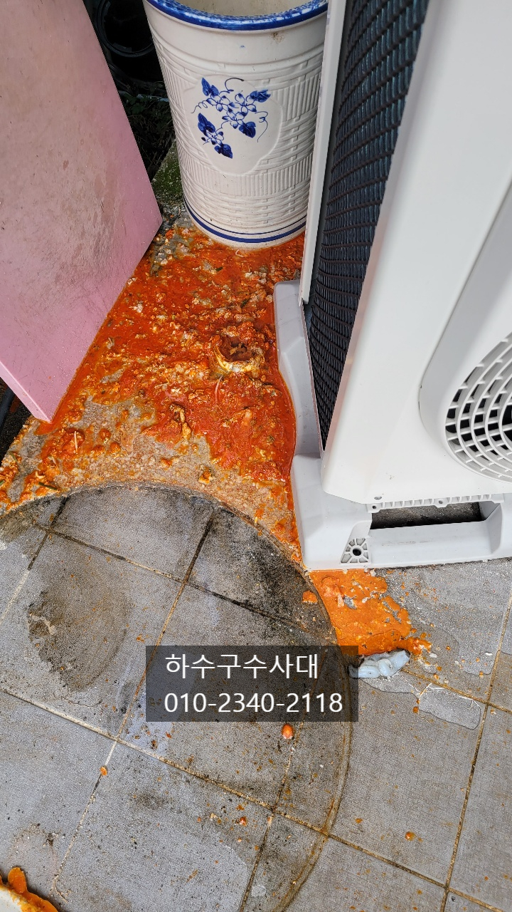
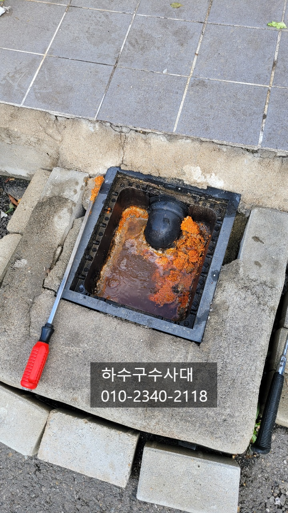
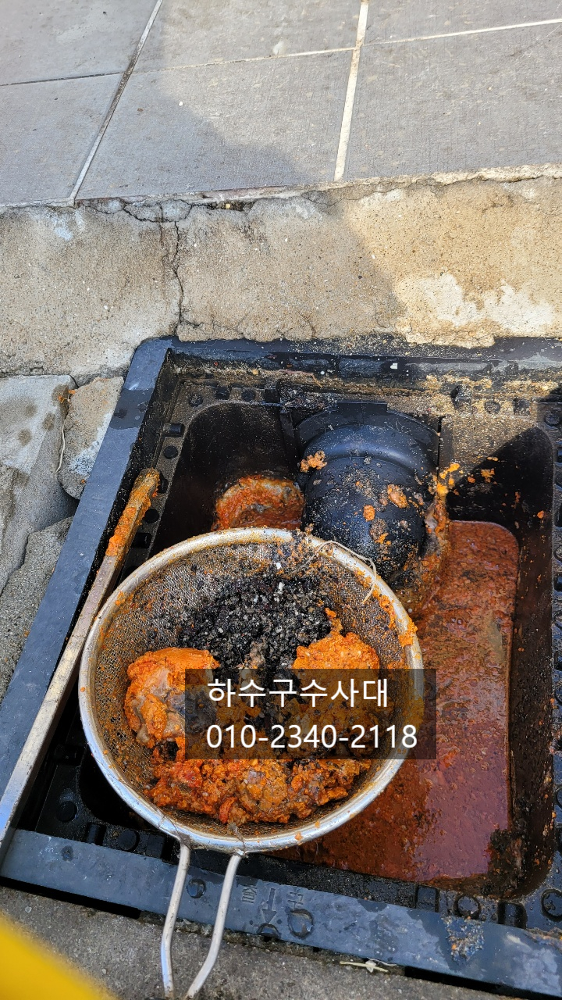
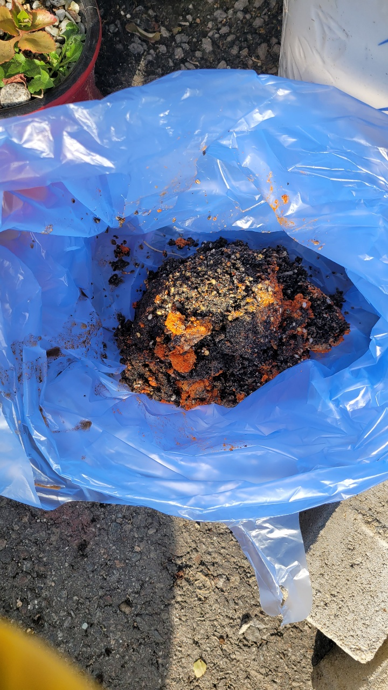
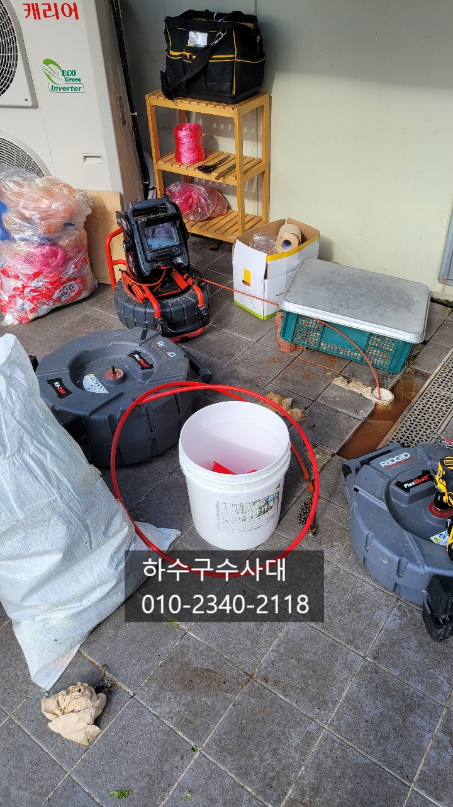
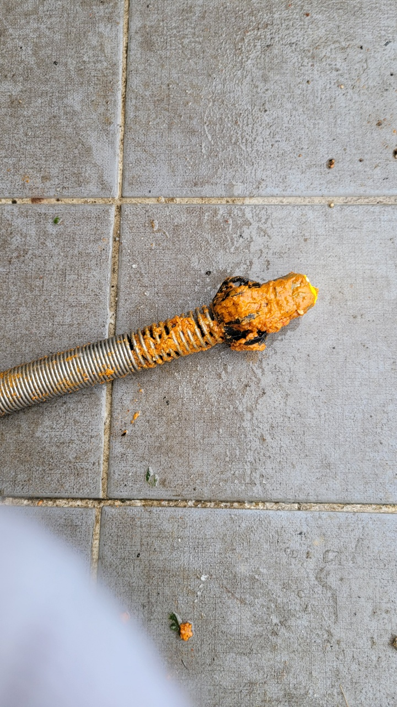

🏠 평택싱크대막힘 싱크대역류 원인해결
평택 싱크대막힘 전문 시공 후기

📋 작업 개요
- 위치: 평택
- 서비스 유형: 싱크대막힘, 하수구막힘, 배관막힘, 집수정막힘, 역류해결, 배관청소, 고압세척
- 작업 일시: 2021. 6. 8. 0:18
- 업체명: 하수구수사대 (010-5615-2118)
🔍 문제 상황
식당하수구막힘 평택하수구막힘 원인해결
평택에 위치한 김치찌게전문점에서 #하수구역류 증상으로
외부배관에서 기름덩어리가 올라온다는 연락을 받고
"하수구수사대"가 출동하였습니다.
식당주방에서 싱크대물을 쓰면 뒤쪽 외부에 노출되어있는 배관에서
기름덩어리가 역류하는 증상이였는데요
주방에 다른한개의 싱크대는 물이 잘내려가는 반면에
벽쪽에 있는 싱크대물을 쓰면 역류한다고 하여
"하수구수사대"가 수사를 진행하였습니다^^
주방뒤쪽에 집수정을 열어 보았는데요 배관은
정상적으로 연결이 되어있지만 관리가 되지않아
기름덩어리가 많은것을 확인할수 있었습니다.

🔎 원인 분석
💡 전문가 진단: 하수구수사대010-2340-2118
집수정은 점검을 할수 있도록 관리를 해줘야 하는데요
오랜기간 사용하다보면 기름이 쌓여 덩어리가 되기도하고
모래같은 무거운 이물질들이 바닥에 쌓여 청소도 해줘야합니다.
바닥에서 흙도 많이 나왔는데요 주방에서는
신발을 신고 다니다 보니 신발에서 떨어져 나온
흙들이 쌓여 집수정에 쌓이게 되는 경우 입니다.
배관의 기울기를 잘 주어도 집수정 청소가 되지않아
오수관 하수관을 막는 경우도 있으니
1년에 한번씩은 점검을 해주는 것이 좋습니다^^
역류하는 배관은 기름으로 꽉 막혀있어 기름과물이
함께 중간 점검구에서 역류하고 있었는데요
플렉스샤프트를 투입하여 배관에 기름덩어리를 모두

🔧 작업 과정
제거하는 작업을 진행하였습니다.
아무래도 돼지김치찌게 식당이라 돼지기름이
쌓여 막히게 되었는데요 배관을 깨끗히 세척한뒤
관리만 잘하신다면 다시 막히는 일은 없으실 겁니다.
식당하수구막힘 평택하수구막힘 고압세척
물이 차오르지않고 시원하게 잘 나가고 있습니다.
보통 배관의 구배가 좋지않아 기름이 쌓이게 되는데
돼지기름과 소기름을 많이 사용하는 식당에서는
특히나 뜨거운물을 자주 흘려보내야 배관에
이물질이 쌓이는것을 방지할수 있어요.
기름이 식으면 바로 굳어버리고 배관에 붙게 되기
때문입니다.
물은 잘 흘러나가지만 구배가 좋지않아
물이 고여있는것을 확인할수 있었습니다.
고객님께도 충분한 설명을 드리니 앞으로
관리에 신경을 써야겠다고 하십니다.^^
이처럼 물이 흘러 내려가는 하수구는 보통
신경쓰기가 쉽지 않은데요. 구배가 좋지않거나
구조적으로 문제가 생기면 낭패를 볼수 있기때문에
관리를 잘 해야합니다.


✅ 작업 완료
하수구때문에 고민중이시라면 언제든지
"하수구수사대"를 찾아주세요!
속시원하게 해결해드리겠습니다^^
하수구수사대
010-2340-2118




⚠️ 주방 싱크대 배관 막힘 예방 수칙
- ✅ 기름기가 묻은 식기나 프라이팬은 설거지 전 키친타올로 반드시 기름때를 닦아내세요.
- ✅ 주기적으로 싱크대 개수대에 뜨거운 물을 가득 받아 한 번에 내려 배관 내부 기름을 씻어내세요.
- ✅ 배수구 거름망을 미세한 필터로 사용하시고 음식물 찌꺼기가 틈으로 새어 들지 않게 관리하세요.
- ✅ 베이킹소다와 식초를 뜨거운 물과 함께 일주일에 한 번씩 부어주면 배관 살균과 막힘 예방에 좋습니다.
💡 핵심 정리
- 확실한 장비 작업(내시경 점검 및 샤프트 스케일링)으로 원인을 뿌리 뽑습니다.
- 작업 후 1년 이내에 동일한 부위 재발 시 100% 무상 A/S 서비스를 보장합니다.
- 서울 · 경기 · 인천 전 지역에 24시간 언제든 긴급 출동할 수 있도록 항시 대기 중입니다.
❓ 자주 묻는 질문 (FAQ)
🚨 평택 싱크대막힘 문제로 고민이신가요?
정확한 원인 진단과 확실한 시공으로 재발 없는 해결을 약속드립니다.
24시간 긴급 출동 | 서울 · 경기 · 인천 전지역 | 1년 내 재발 시 무상 A/S